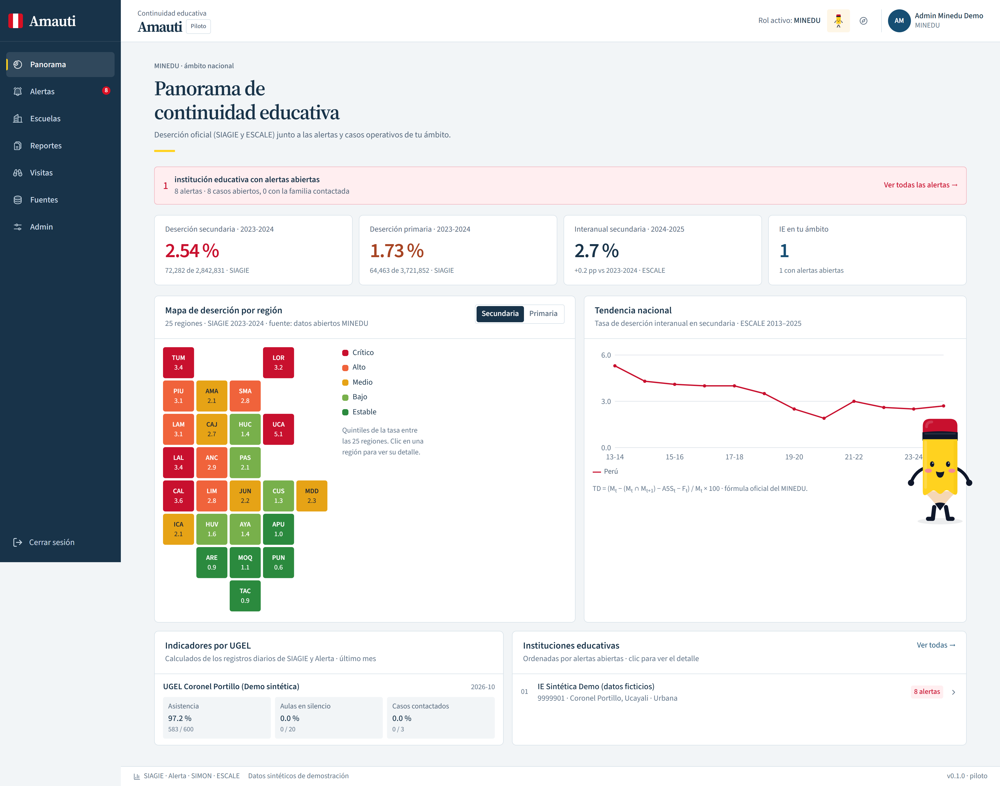
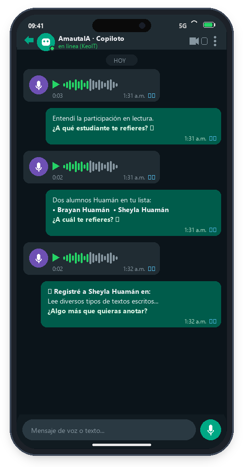
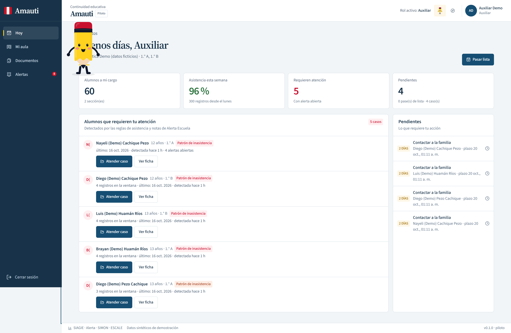
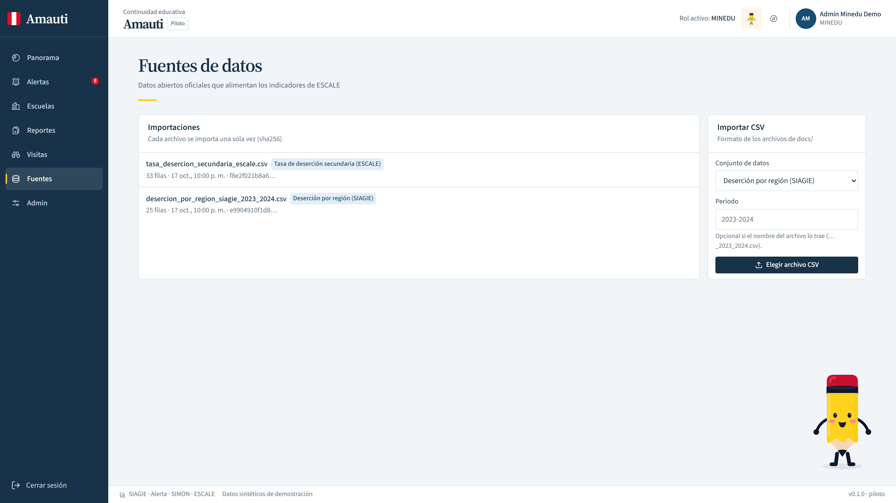
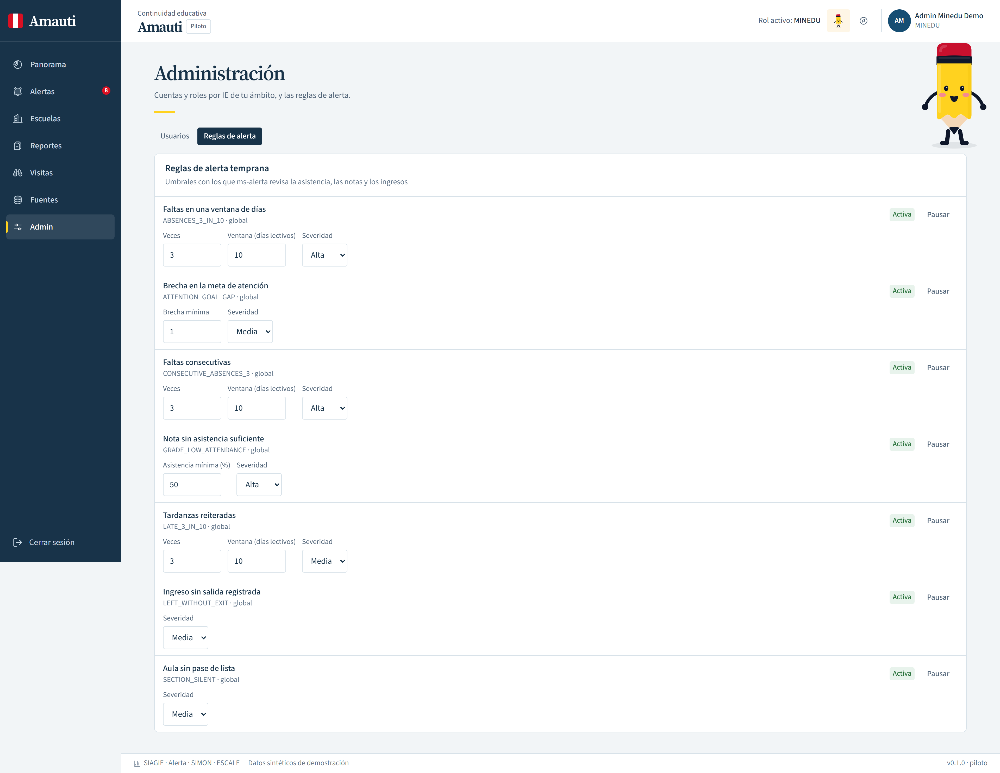

Perú · Cada 24 Horas
375
alumnos abandonan el colegio.
¿En qué minuto exacto los perdimos?

El Punto Ciego de 60 Días
Sistemas que hacen autopsias, no rescates.
📉
Lunes
Falla en clase
🟢 Oficial: "Normal"
🪑
Jueves
Empieza a faltar
🟢 Oficial: "Normal"
🚨
Día 60
Ya desertó
🔴 Recién salta la alerta
👩🏫 Profesor solo, en trámites y sin tecnología en el aula…
➔
💬 Salvo WhatsApp
La Diferencia Amauti
Cierra el ciclo entre la señal y el rescate.


Ingeniería Real
5 Microservicios Desacoplados
ms-auth
RBAC Multinivel · JWKS
ms-siagie
Asistencia · Notas CNEB
ms-alerta
Motor Determinista · 48h
ms-simon
Reportes · Cifrado AES-256
ms-escale
Datos Oficiales SHA-256

Decisiones y Visión
Cada día en el aula cuenta.
Hoy en vivo
Reglas Auditables + Tiempo libre para que el profesor intervenga
Siguiente Paso
Planes concretos de nivelación y tutoría desde la bitácora
